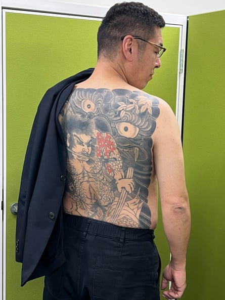
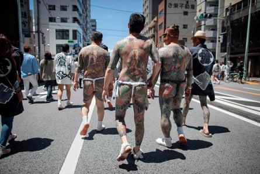

Yoshitomo Morohashi is every inch the lawyer, from his three-piece suit and designer glasses to the sunflower lapel badge identifying him as a member of the Japan Federation of Bar Associations.
Then, with little encouragement, he removes his shirt and turns away to reveal a tattoo of an ancient warrior, a samurai sword clenched between his teeth, covering his entire back.
Morohashi’s readiness to expose his body art is relatively recent: there was a time when he did everything possible to conceal it and the dark past it represented.
His life story is an extreme example of poacher-turned-gamekeeper. For more than two decades, Morohashi lived a life of crime as a member of a yakuza organisation before he addressed his drug addiction, with a mental health crisis on a busy Tokyo street setting him on a path of professional and personal redemption.
“The thing is, I had a very happy, normal childhood,” Morohashi says in an interview at his office in Tokyo. “I was a very good student and always came top of my class, but I found it hard to settle … I was disruptive and drove my teachers crazy.”
Yoshitomo Morohashi, a former yakuza member who became a defence lawyer, shows his tattoo at his office in Tokyo.Photograph: Justin McCurry/The Guardian
Morohashi was just 14 when his father, a noodle maker, died, leaving his mother to raise their only child in Iwaki, a large town in Fukushima prefecture.
“I really struggled after my father’s death, and I had no brothers or sisters to turn to,” he says. Morohashi’s descent into delinquency drowned out his clear academic talent. After failing his university entrance exams, he was sent to Tokyo to attend a cram school and, his mother hoped, gain a degree and start a career.
Two years later, he was accepted by Seikei University, but by then he had also found drugs, along with a circle of friends who shared his fondness for aburi – inhaling the smoke from heated methamphetamine .
Time that should have been devoted to his studies was spent playing mahjong and hanging out with young men with links to Japan’s network of organised crime syndicates.
“I had been swept up in that kind of lifestyle … basically drugs and antisocial behaviour,” he says. His knowledge of narcotics – and his imposing physique – made Morohashi, now a university dropout, a natural recruit for the Inagawa-kai, Japan’s third-biggest yakuza group, which employed him as a dealer and debt collector.
“I never shot or stabbed anyone, but I did rough people up with a baseball bat if they didn’t repay their loans … but I never targeted the head,” he says. “The yakuza became my family. I had lost my father, and I finally felt like I belonged. They accepted me. I knew they did awful things to people, but I pretended that it had nothing to do with me.”
However, his drug addiction worsened, culminating in 2005 in a public meltdown, stripped to the waist, on the famous “scramble” crossing in Shibuya – a humiliation that would change the course of his life.
He was committed to a psychiatric hospital for six months and expelled from his gang. “I had embarrassed them,” he explains. His mother, with whom he had not spoken for seven years, rushed to his side, “even though I knew she was in pain over my drug addiction and yakuza membership”. After being discharged, Morohashi was arrested on drug charges and sentenced to 18 months in prison, suspended for three years.
His mother aside, two other people would have a profound effect on Morohashi: the judge at his trial who said he believed in him when he said he wanted to become a lawyer, and Mitsuyo Ōhira, a woman with a similarly chaotic past who wrote about her transformation from yakuza wife to respected lawyer in her 2000 autobiography Dakara, anata mo ikinuite (That’s why you too can survive).
Participants with traditional Japanese tattoos, related to the yakuza, walk through Tokyo during the annual Sanja Matsuri festival.Photograph: Behrouz Mehri/AFP/Getty Images
“My mother gave me a copy of the book, and I immediately understood how [Ōhira] felt,” says Morohashi, the book now taking pride of place in his office. “I knew I had made a mess of my life and wanted to be like her.”
Over the next seven years, Morohashi rediscovered his scholastic instincts, becoming a qualified estate agent before passing exams to become a judicial scrivener. He then enrolled at law school in Osaka and passed the bar exam – which has a pass rate of 45% – in 2013.
“My identity as a former yakuza weakened,” the 48-year-old says. “Sometimes I would catch sight of my tattoo in the shower and could barely believe what I had been.”
On Ōhira’s advice, he did not talk about his old life to his contemporaries at law school or to colleagues at the offices in Osaka and Tokyo where he cut his legal teeth working mainly on criminal cases.
Morohashi finally revealed his past in a 2022 YouTube interview, convinced it would make it easier for him to help other men and women whose lives had been turned upside down by their yakuza membership.
Today, two years after he opened his own office and released an autobiography – Motoyakuza bengōshi (The Ex-Yakuza Lawyer) – the defence attorney counts gang members among his clients, all united by a desire to escape the yakuza’s clutches and rejoin mainstream Japanese society.
“They realise that it’s important to take responsibility by serving their time, apologise, and then rebuild their lives. I know that too because of my time in the yakuza.”
Demand for Morohashi’s services is likely to grow. Japan’s fast-ageing society , coupled with the introduction of stricter anti-yakuza laws mean membership is at an all-time low. Even those who leave are forbidden from opening a bank account for five years, making it almost impossible to rent a flat or find a job.
A depleted yakuza is now ceding ground to tokuryū – ad hoc groups whose members often don’t know each other and which have been accused of crimes ranging from robberies and frauds to assaults and murders.
“I tell the men I represent that they are not leaving the yakuza for the good of society – they are doing it for themselves and their families. When they think of it that way it can work out for them,” he says.
“That’s the most important part of what I do as a lawyer, convincing people that they can make things right, no matter what they have done. Giving people hope is what keeps me going.”
Now married with a young daughter, Morohashi has reconciled with his mother. “That’s the thing I’m most proud of … I finally made my mum happy.”